Code for Digital Image Processing Noise
Table of Contents
These are the code snippets used in Noise part of Digital Image Processing.
Introduction
These series of codes are additional content and main code snippets for the lecture topic Noise for Digital Image Processing.
Preamble
To plot images in a consistent style and quality a custom package was written for the module called ChalcedonPy which you can see its source code here.
To install the package, simply install it via pip:
pip install ChalcedonPy
This package needs a save folder path and a style.
In its current state there are two (2) states:
| PARAMETER | FUNCTION |
|---|---|
| web | images used in the code supplement |
| slide | for use in lecture slides. |
import ChalcedonPy as cp # custom-pakcage for lecture materials and publications SAVE_PATH = "Noise" # sets the default save path style="web" # sets the default rcParams stylce sheet
import matplotlib.pyplot as plt import matplotlib.colors # all related to colours from scipy import special import numpy as np
Noise Types
There are a variety of noise types encountered during image processing and here we will have a look into their characteristic behaviour and also on how to model them.
Gaussian Noise
a kind of signal noise that has a probability density function (pdf) equal to that of the normal distribution (which is also known as the Gaussian distribution).
It has the following function:
\begin{equation*} \varphi (z)={\frac {1}{\sigma {\sqrt {2\pi }}}}e^{-(z-\mu )^{2}/(2\sigma ^{2})} \end{equation*}To start coding, first import the necessary modules
import numpy as np from skimage import data # for smaple image # Create independent variable x = np.arange(0,100,2) # Produces [0, 100) with steps of 2. # Use a linear function to obtain the dependent variable y = 0.3*x + 0.6 # Parameters are arbitrary. # Noise generation # Genearte noise with same size as that of the data. noise = np.random.normal(0,2, len(x)) # μ = 0, σ = 2, size = length of x or y. Choose μ and σ wisely. # Add the noise to the data. y_noised = y + noise # Since both y and noise are numpy arrays of same size, the addition is done element-wise. plt.plot(x, y, label="No noise") plt.plot(x, y_noised, label="$\mu=0$, $\sigma = 2$") plt.legend(loc='upper right'), plt.legend(frameon=True) cp.store_fig("gaussian-noise", filepath = SAVE_PATH, style = "web", close = True)
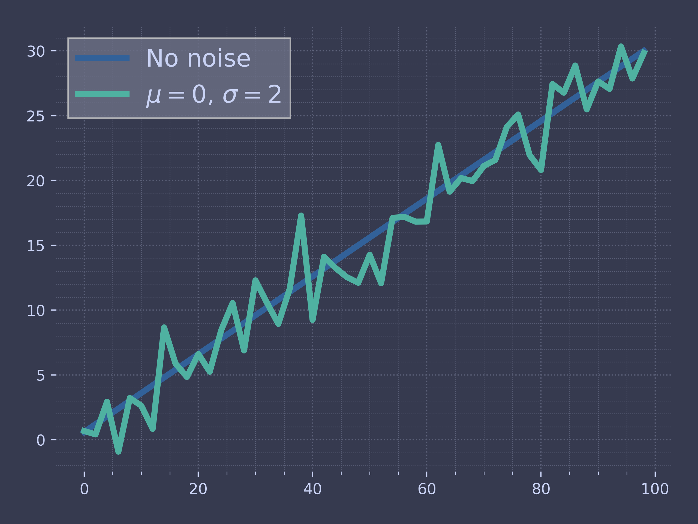
For an image, the behaviour looks something like the following.
# Read Image img = data.astronaut() # Convert the image to grayscale img_gray = img[:,:,1] # Genearte noise with same shape as that of the image noise = np.random.normal(0, 50, img_gray.shape) # Add the noise to the image img_noised = img_gray + noise # Clip the pixel values to be between 0 and 255. img_noised = np.clip(img_noised, 0, 255).astype(np.uint8) fig, ax = plt.subplots(2, 3) ax[0, 0].imshow(img) #row=0, col=0 ax[0, 1].imshow(noise) #row=1, col=0 ax[0, 1].imshow(img_noised) #row=1, col=0 ax[1, 0].plot(range(10), 'g') #row=0, col=1 ax[1, 1].plot(range(10), 'k') #row=1, col=1 cp.store_fig("psd-white-noise", filepath = SAVE_PATH, style = "web", close = True)
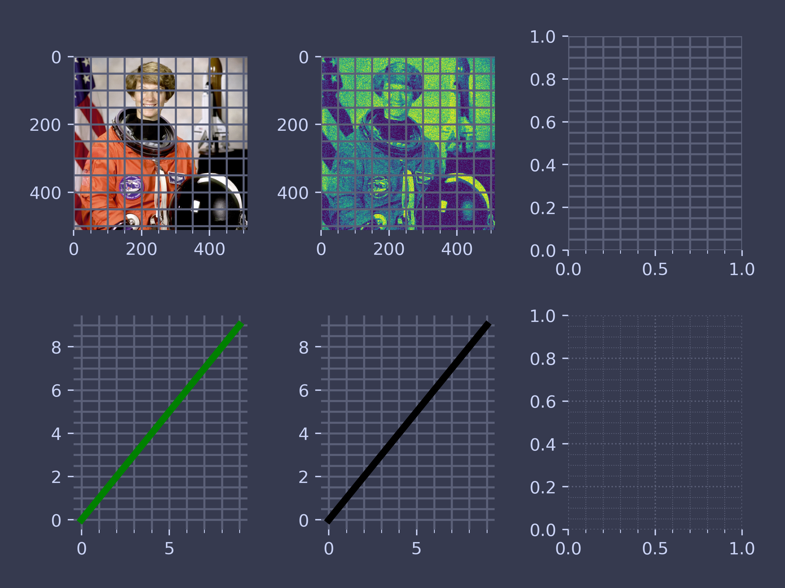
The Gaussian noise is also atrributed as white noise in communications and in image processing as well. A defining characteristic of such a noise is the roughly constant amplitude in its power spectral density (PSD).
Let's draw one and see how it works.
import numpy as np import matplotlib.mlab as mlab # Fixing random state for reproducibility np.random.seed(19680801) dt = 0.01 t = np.arange(0, 10, dt) nse = np.random.randn(len(t)) r = np.exp(-t / 0.05) cnse = np.convolve(nse, r) * dt cnse = cnse[:len(t)] s = 0.1 * np.sin(2 * np.pi * t) + cnse plt.figure(figsize=(10,6)) fig, (ax0, ax1) = plt.subplots(2, 1, layout='constrained') ax0.plot(t, s) ax0.set_xlabel('Time (s)') ax0.set_ylabel('Signal') ax1.psd(s, 512, 1 / dt) cp.store_fig("psd-white-noise", filepath = SAVE_PATH, style = "web", close = True)
Photon Noise
Photon noise is the randomness in signal associated with photons arriving at a detector. For a simple black body emitting on an absorber, the noise-equivalent power is given by:
\begin{equation*} \mathrm {NEP} ^{2}=2h^{2}\nu ^{2}\Delta \nu \left({\frac {n}{\eta }}+n^{2}\right) \end{equation*}where \(h\) is the Planck constant, \(\nu\) is the central frequency, \(\delta\nu\) is the bandwidth, \(n\) is the occupation number and \(\eta\) is the optical efficiency.
To plot the behaviour of photon noise simplify this and use the first term which is known as shot noise, a noise modelled using the Poisson process.
def photon_noise(mu=[1, 2, 5, 10], k=np.arange(0, 20, 0.1), legend_text=[r'$\rho T = 1$', r"$\rho T = 2$", r"$\rho T = 5$", r"$\rho T = 10$"], publish=None, show=None, style=None): """Function to plot the photon noise experienced in image acquisition. :param mu: Mean value. Sets to 1,2,5,10. Different values can be entered. :param k: Occurrence values. Set to (0,20,0.1). Different values can be entered. :param legend_text: Legend text. Initial value set. :param publish: Prints value to an .eps files set value to the name of the file. :param show: Shows the value. """ ind = 0 # Set the loop indicator for mean in mu: poisson = np.exp(-mean) * np.power(mean, k) / special.factorial(k) plt.plot(k, poisson, label=legend_text[ind]) ind += 1 plt.legend(loc='upper right'), plt.legend(frameon=True) # Plotting.printer(show, publish) photon_noise() plt.title("Poisson Process for Photon Noise") plt.xlabel("Number of Occurrences ($p$)") plt.ylabel("$P(x=p)$") cp.store_fig("photon-noise", filepath = SAVE_PATH, style = "web", close = True) #plt.close()
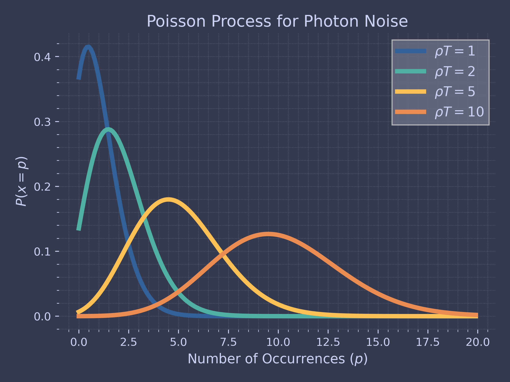
Colours of Noise
Noise is classified based on the "colour" which is related to its magnitude amplitude with regards to frequencies.
The following code snippet plots all relevant colours of noise on a common plot.
import numpy as np import matplotlib.pyplot as plt def plot_spectrum(s): f = np.fft.rfftfreq(len(s)) return plt.loglog(f, np.abs(np.fft.rfft(s)))[0]
def noise_psd(N, psd = lambda f: 1): X_white = np.fft.rfft(np.random.randn(N)); S = psd(np.fft.rfftfreq(N)) # Normalize S S = S / np.sqrt(np.mean(S**2)) X_shaped = X_white * S; return np.fft.irfft(X_shaped);
def PSDGenerator(f): return lambda N: noise_psd(N, f)
@PSDGenerator def white_noise(f): return 1;
@PSDGenerator def blue_noise(f): return np.sqrt(f);
@PSDGenerator def violet_noise(f): return f;
@PSDGenerator def brownian_noise(f): return 1/np.where(f == 0, float('inf'), f)
@PSDGenerator def pink_noise(f): return 1/np.where(f == 0, float('inf'), np.sqrt(f))
Time to plot our colours of noise. Here we use the zip() function which takes iterables and turns them into tuples.
#plt.style.use('dark_background') plt.figure(figsize=(12, 8), tight_layout=True) for G, c in zip( [brownian_noise, pink_noise, white_noise, blue_noise, violet_noise], ['brown', 'hotpink', 'white', 'blue', 'violet']): plot_spectrum(G(30*50_000)).set(color=c, linewidth=3) plt.legend(['brownian', 'pink', 'white', 'blue', 'violet']) plt.suptitle("Colored Noise"); plt.ylim([1e-3, None]); cp.store_fig("colour-of-noise", filepath = SAVE_PATH, style = "web", close = True)

Entropy
Entropy is measured to be the state of disorder. For an image, local entropy is related to the complexity contained in a given neighborhood, typically defined by a structuring element. The entropy filter can detect subtle variations in the local gray level distribution.
import matplotlib.pyplot as plt import numpy as np from skimage import data from skimage.util import img_as_ubyte from skimage.filters.rank import entropy from skimage.morphology import disk rng = np.random.default_rng() noise_mask = np.full((128, 128), 28, dtype=np.uint8) noise_mask[32:-32, 32:-32] = 30 noise = (noise_mask * rng.random(noise_mask.shape) - 0.5 * noise_mask).astype(np.uint8) img = noise + 128 entr_img = entropy(img, disk(10)) fig, (ax0, ax1, ax2) = plt.subplots(nrows=1, ncols=3, figsize=(10, 4)) img0 = ax0.imshow(noise_mask, cmap='gray') ax0.set_title("Object") ax1.imshow(img, cmap='gray') ax1.set_title("Noisy image") ax2.imshow(entr_img, cmap='viridis') ax2.set_title("Local entropy") cp.store_fig("entropy-image", filepath = SAVE_PATH, style = "web", close = True)
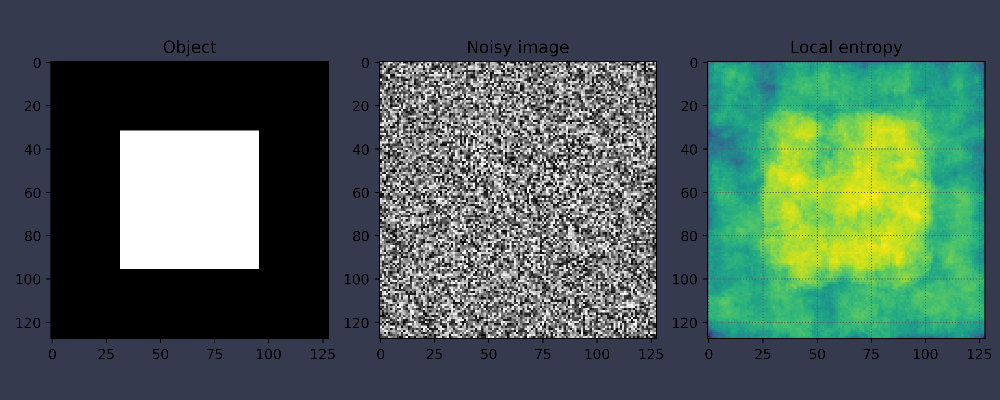
You can also calculate the Shannon entropy of an image. Without going into too much into detail, it quantifies the amount of information contained in a message or data set. Mathematically it is defined as:
Given a discrete random variable \(X\), which takes values in the set \(\mathcal{X}\) and is distributed according to \(p : \mathcal{X} \rightarrow [0 , 1]\), the entropy is:
\begin{equation*} \mathrm {H} (X):=-\sum _{x\in {\mathcal {X}}}p(x)\log p(x) \end{equation*}where \(\Sigma\) denotes the sum over the variable's possible values.
The higher the entropy, the more uncertain or unpredictable the information is.
import skimage.measure import skimage as ski img = ski.io.imread("Fruit.jpg") entropy = skimage.measure.shannon_entropy(img) print("Original image:", entropy)
Original image: 7.878513692105653
Let's add some noise to our image and see if our entropy changes.
img_noise = skimage.util.random_noise(img, mode='gaussian') entropy = skimage.measure.shannon_entropy(img_noise) print("Image with noise", entropy)
Image with noise 19.2941617568451
And finally lets see image comparison between the original image and image with noise.
cp.Plotting.image_subplot_style( 1, 2, image_array=[img, img_noise], show=False, publish="images/Noise/shannon-comparison", rgb=None)
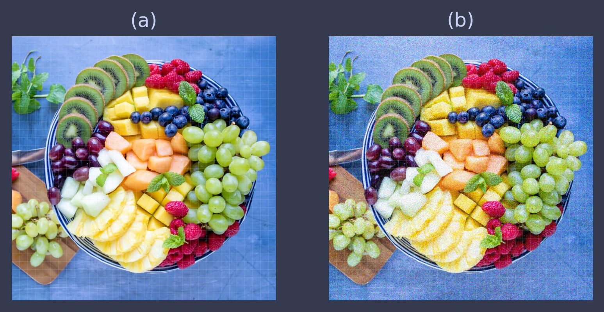
As can be seen visually, the image on the right has significant noise compared to the original image and using shannon's entropy to quantify this disorder.
Perlin Noise
Perlin noise is a procedural texture primitive, a type of gradient noise used by visual effects artists to increase the appearance of realism in computer graphics.
The function has a pseudo-random appearance, yet all of its visual details are the same size.
Let's use this noise model to create some maps and mountains.
The first thing to do is to load the necessary modules. The only interesting module here is PIL which stands for python image library.
import noise import numpy as np from PIL import Image import matplotlib.pyplot as plt
Next are two functions that come useful. The first one is rgb_norm which
normalises the generated matrix and second is to prepare the "world" for
later processing
def rgb_norm(world): world_min = np.min(world) world_max = np.max(world) norm = lambda x: (x-world_min/(world_max - world_min))*255 return np.vectorize(norm) def prep_world(world): norm = rgb_norm(world) world = norm(world) return world
Now it is important to set the parameters for our model. As we are building a map, the scale should be big.
shape = (256,256) scale = 200 octaves = 6 persistence = 0.5 lacunarity = 2.0 seed = 51
We now define the matrix and create a 2D array of Perlin noise.
world = np.zeros(shape) for i in range(shape[0]): for j in range(shape[1]): world[i][j] = noise.pnoise2(i/scale,j/scale, octaves=octaves, persistence=persistence, lacunarity=lacunarity, repeatx=1024, repeaty=1024, base=seed)
plt.imshow(world,cmap='terrain') cp.store_fig("perlin-plot-2d-map", filepath = SAVE_PATH, style = "web", close = True)
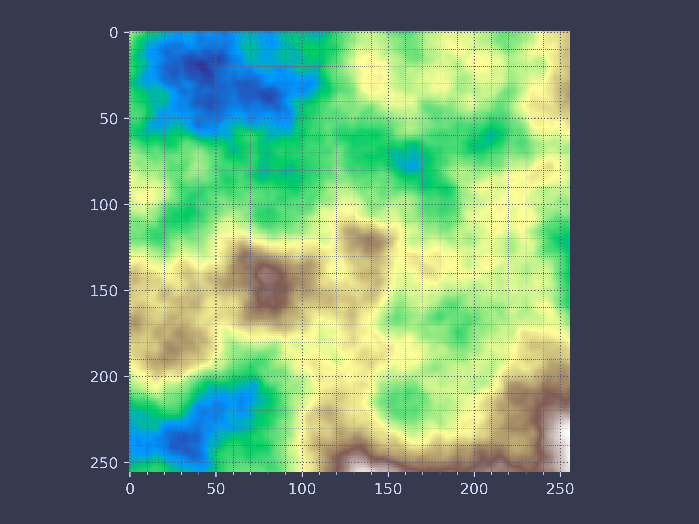
Creating 3D Mountain Terrain
Now it is time to create 3D terrain by just using Perlin noise.
First import all that is necessary for 3D plotting
from mpl_toolkits.mplot3d import axes3d
We can have a quick look at the generated image.
lin_x = np.linspace(0,1,shape[0],endpoint=False) lin_y = np.linspace(0,1,shape[1],endpoint=False) x,y = np.meshgrid(lin_x,lin_y)
fig = plt.figure() ax = fig.add_subplot(projection='3d') ax.plot_surface(x,y,world,cmap='terrain') for spine in ax.spines.values(): spine.set_visible(False) cp.store_fig("perlin-plot-3d-map", filepath = SAVE_PATH, style = "web", close = True)
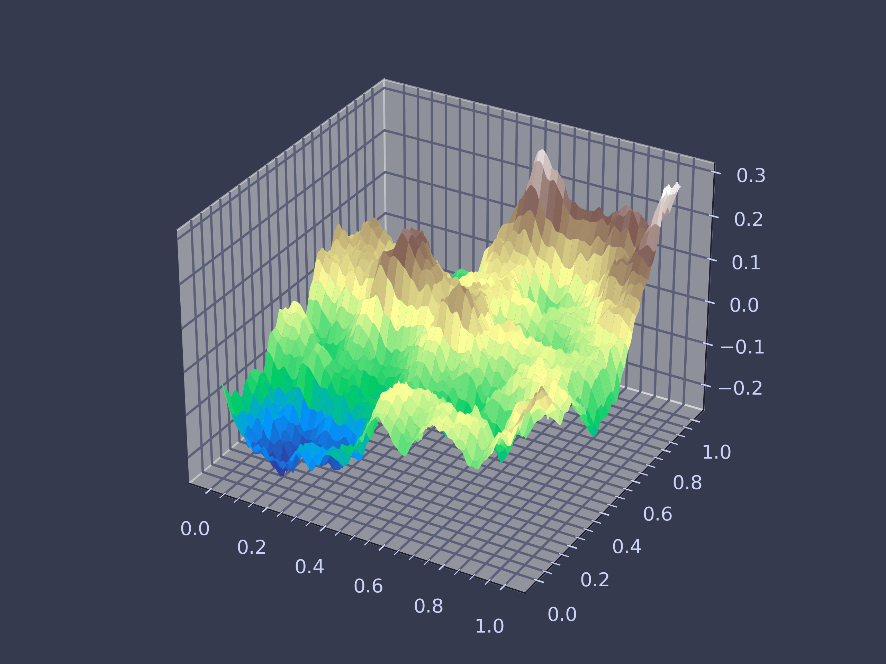
Application: Modelling Camera Noise
A good description of camera noise can be found in the EMVA 1288 Standard. This document details a standard set of models and procedures to characterize CMOS and CCD cameras and light sensors.
From their website:
EMVA launched the initiative to define a unified method to measure, compute and present specification parameters for cameras and image sensors used for machine vision applications…
[The EMVA Standard] creates transparency by defining reliable and exact measurement procedures as well as data presentation guidelines and makes the comparison of cameras and image sensors much easier.
More information can be found on their website.
Based on their specification, the noise on a camera sensor is defined as the summ of the following noises in order:
- Photon (shot) noise
- Dark Noise
- Quantisation Noise
As can be seen the model can become quite complex without due simplifactions which are as follows:
- the numer of photons collected by the pixel depends on the product of irradiance 𝐸[𝑊/𝑚2] and the exposure time 𝑡𝑒𝑥𝑝[𝑠];
- the sensor is linear, i.e. the digital signal 𝑦 increases linearly with the number of photons received;
- all noise sources are constant in time and space;
- only the total quantum efficiency of the camera is dependent on the wavelength of the incident irradiation
- and only the dark current depends on the temperature.
To start modelling camera noise, first thing to do is to import the necessary modules.
import matplotlib.pyplot as plt
Start with calculate the photon shot noise. Let us assume we have a camera with 256-by-256 pixels and a mean incident photon flux of 500 photons on each pixel.
This would produce an image that looks like this:
num_photons = 500 num_pixels = 256 mu_p = num_photons * np.ones((num_pixels, num_pixels)) # A simple plot of no noise fig, ax = plt.subplots() img = ax.imshow(mu_p, vmin=400, vmax=600) ax.set_xticks([]) ax.set_yticks([]) ax.set_title('No noise') cb = plt.colorbar(img) cb.set_label('Photons') cp.store_fig("camera-noise-no-noise", filepath = SAVE_PATH, style = "web", close = True)
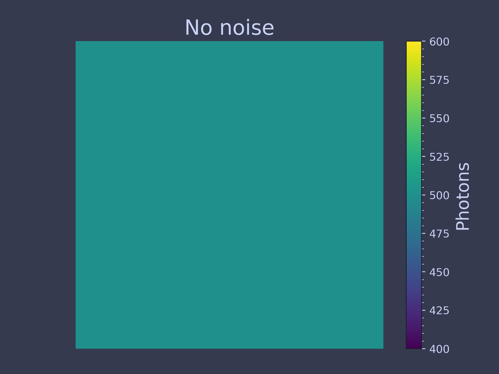
Photon Shot Noise
Arises from photon being a random process and not deterministic which its distribution is modelled as Poisson.
To generate poisson derived numbers we need random numbers and for that we use RandomState.
Using this, call the poisson method with a mean value of num_photons and
a size of num_pixels.
seed = 42 rs = np.random.RandomState(seed) shot_noise = rs.poisson(num_photons, (num_pixels, num_pixels))
| FUNCTION | DEFINITION | MORE INFO |
| np.random.RandomState(... | Container for the slow Mersenne Twister pseudo-random number generator. | Link |
fig, (ax0, ax1) = plt.subplots(ncols=2) img0 = ax0.imshow(mu_p, vmin=400, vmax=600) ax0.set_xticks([]), ax0.set_yticks([]) ax0.set_title('No shot noise') divider = make_axes_locatable(ax0) cax = divider.append_axes("right", size="5%", pad=0.05) cb0 = plt.colorbar(img0, cax=cax) cb0.set_ticks([]) img1 = ax1.imshow(shot_noise, vmin=400, vmax=600) ax1.set_xticks([]), ax1.set_yticks([]) ax1.set_title('Shot noise') divider = make_axes_locatable(ax1) cax = divider.append_axes("right", size="5%", pad=0.05) cb1 = plt.colorbar(img1, cax=cax) cp.store_fig("camera-noise-poisson", filepath = SAVE_PATH, style = "web", close = True)
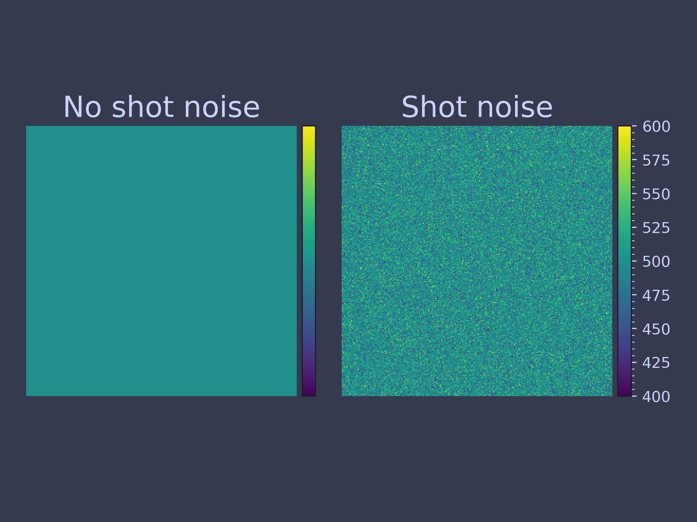
It is also worth looking at the distribution of the photons.
plt.hist(shot_noise.ravel(), bins=np.arange(350, 650)) plt.xlabel('Number of photons per pixel') plt.ylabel('Frequency') cp.store_fig("camera-photon-dist", filepath = SAVE_PATH, style = "web", close = True)
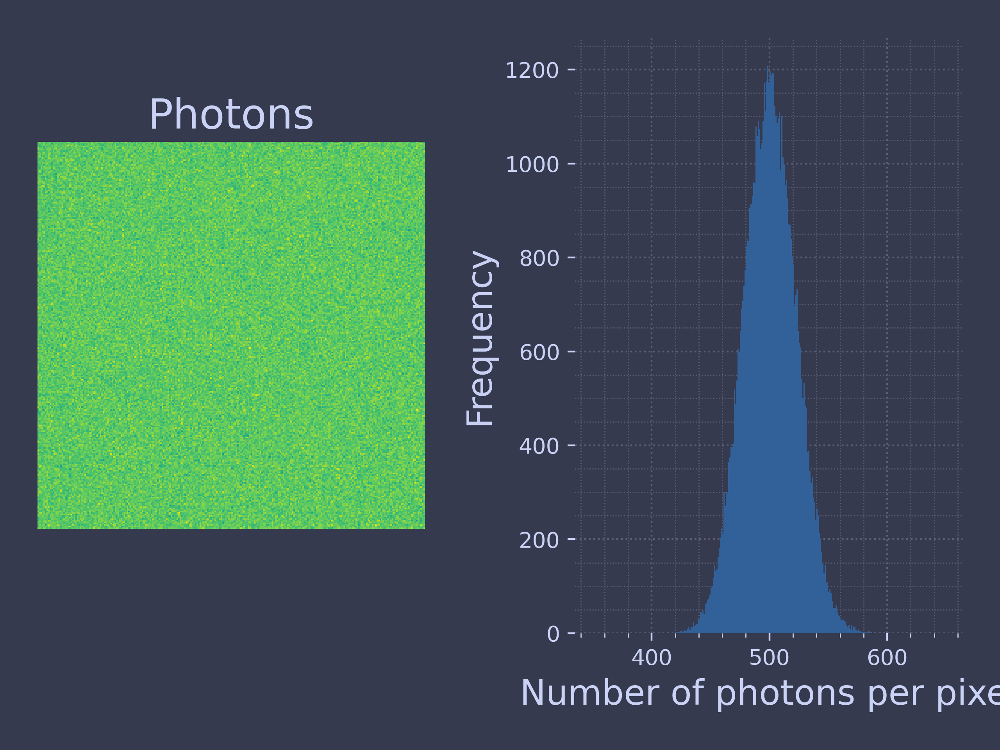
Calculating the Number of Photoelectrons
import matplotlib.pyplot as plt from mpl_toolkits.axes_grid1.axes_divider import make_axes_locatable quantum_efficiency = 0.69 # Round the result to ensure that we have a discrete number of electrons electrons = np.round(quantum_efficiency * shot_noise)
At this point we're going to need some numbers for our camera.
For this example, let's use the Sony IMX264 CMOS chip, the FLIR Chamleon 3 (part number CM3-U3-50S5M-CS). Here are some of the key specs for our modeling:
| SPEC | VALUE |
| Quantum efficiency (at 525 nm) | 0.69 |
| Sensitivity | 5.88 ADU / e- |
| Temporal dark noise | 2.29 e- |
| Pixel size | 3.45 microns |
| Analog-to-digital converter (ADC) | 12-bit |
Under the assumption light having a wavelength of 525 nm, the number of photoelectrons is simply the product of the quantum efficiency with the realization of the field.
fig, (ax0, ax1) = plt.subplots(ncols=2) img0 = ax0.imshow(shot_noise, vmin=200, vmax=600) ax0.set_xticks([]), ax0.set_yticks([]) ax0.set_title('Photons') divider = make_axes_locatable(ax0) cax = divider.append_axes("right", size="5%", pad=0.05) cb0 = plt.colorbar(img0, cax=cax), cb0.set_ticks([]) img1 = ax1.imshow(electrons, vmin=200, vmax=600) ax1.set_xticks([]) ax1.set_yticks([]) ax1.set_title('Electrons') divider = make_axes_locatable(ax1) cax = divider.append_axes("right", size="5%", pad=0.05) cb = plt.colorbar(img1, cax=cax) cp.store_fig("camera-photoelectron-numbers", filepath = SAVE_PATH, style = "web", close = True)
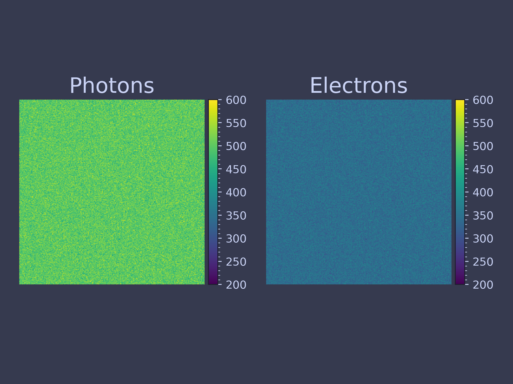
Simulating Read Noise and Dark Current
Dark noise (not to be confused with dark current) refers to the noise in the pixels when there is no light on the camera. Typically we deal with two sources of dark noise:
- readout (or just "read") noise
- dark current.
The camera specs in our example only provide us with the total dark noise, which is not surprising since dark current is not very significant in microscopy or machine vision.
dark_noise = 2.29 # electrons electrons_out = np.round(rs.normal(scale=dark_noise, size=electrons.shape) + electrons)
Time to plot our results.
fig, (ax0, ax1) = plt.subplots(ncols=2) img0 = ax0.imshow(electrons, vmin=250, vmax=450) ax0.set_xticks([]) ax0.set_yticks([]) ax0.set_title('Electrons In') divider = make_axes_locatable(ax0) cax = divider.append_axes("right", size="5%", pad=0.05) cb0 = plt.colorbar(img0, cax=cax) cb0.set_ticks([]) img1 = ax1.imshow(electrons_out, vmin=250, vmax=450) ax1.set_xticks([]) ax1.set_yticks([]) ax1.set_title('Electrons Out') divider = make_axes_locatable(ax1) cax = divider.append_axes("right", size="5%", pad=0.05) cb = plt.colorbar(img1, cax=cax) cb.set_label('Electrons') cp.store_fig("camera-dark-current", filepath = SAVE_PATH, style = "web", close = True)
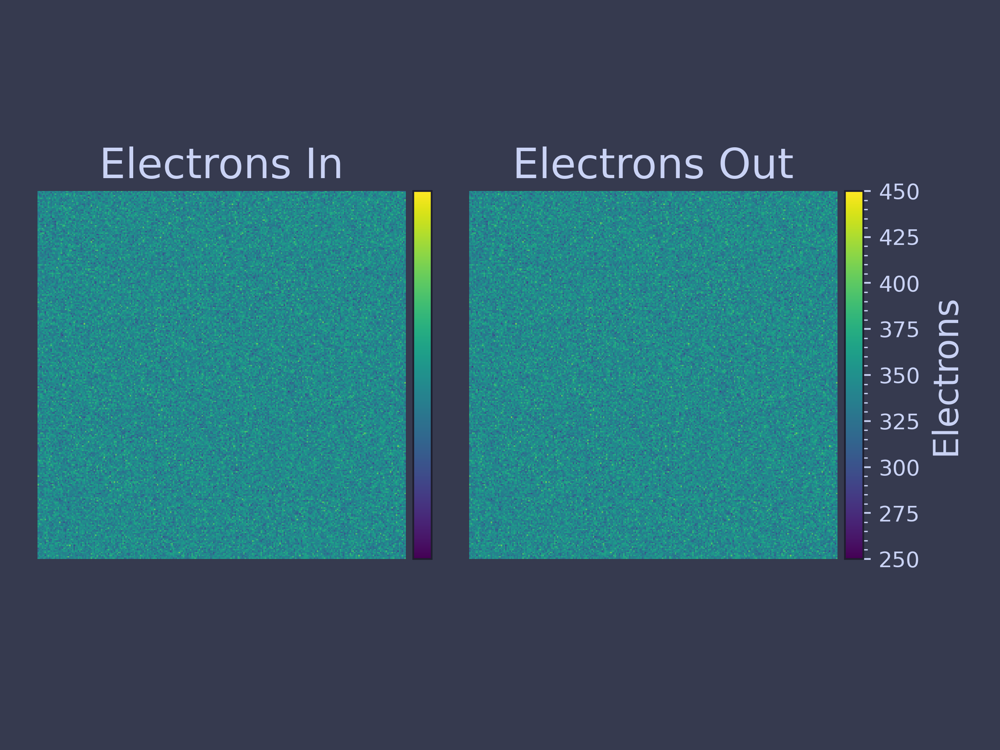
We can also plot the difference between the input and the output of the sensor.
fig, ax = plt.subplots() img = ax.imshow(electrons - electrons_out, vmin=-10, vmax=10) ax.set_xticks([]) ax.set_yticks([]) ax.set_title('Difference') cb = plt.colorbar(img) cb.set_label('Electrons') cp.store_fig("electron-plot", filepath = SAVE_PATH, style = "web", close = True) #plt.show()
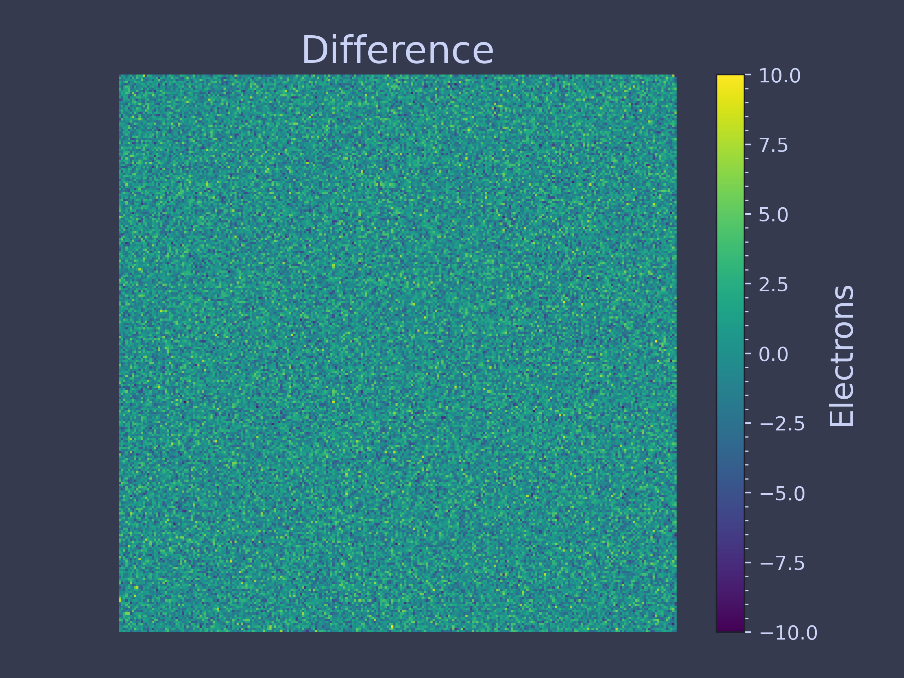
Convert Electrons to Analog-to-Digital Units (ADU)
Now we need to convert the value of each pixel from electrons to ADU, or analog-to-digital units.
ADU's are the units of grey scale that are output by monochrome cameras.
sensitivity = 5.88 # ADU/e- bitdepth = 12 max_adu = int(2**bitdepth - 1) adu = (electrons_out * sensitivity) adu[adu > max_adu] = max_adu # models pixel saturation fig, ax = plt.subplots() img = ax.imshow(adu) ax.set_xticks([]) ax.set_yticks([]) cb = plt.colorbar(img) cb.set_label('ADU') cp.store_fig("adu-plot", filepath = SAVE_PATH, style = "web", close = True)
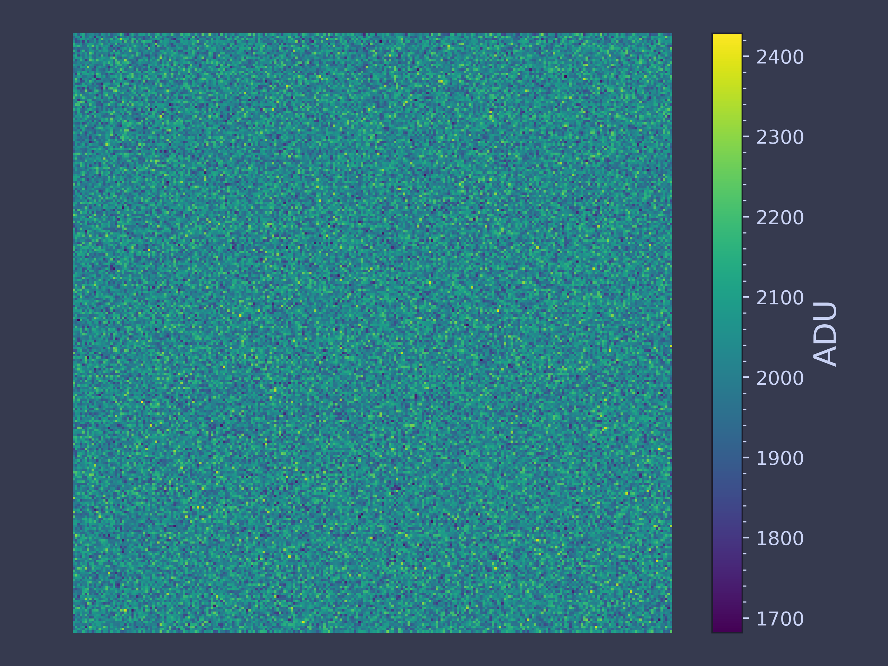
Adding a Baseline
Many cameras have a built-in baseline ADU value. This prevents the number of ADU's from becoming negative at low input signal. The Andor Zyla 4.2, for example, has a baseline value of 100 ADU. If you take a large number of dark frames and compute the average of each pixel in a Zyla, the average values will very nearly be 100.
baseline = 100 # ADU adu += baseline # EDIT: Note that we could have easily just performed this next step once # here, rather than in the previous step adu[adu > max_adu] = max_adu fig, ax = plt.subplots() img = ax.imshow(adu) ax.set_xticks([]) ax.set_yticks([]) cb = plt.colorbar(img) cb.set_label('ADU') cp.store_fig("baseline-plot", filepath = SAVE_PATH, style = "web", close = True)
Which brings us to our final image where we have modelled all the noise in a camera based on our simplified assumptions.